Composing a Functional Community
Katie Miller (@codemiller) OpenShift Developer Advocate at Red Hat
Let's Write Some Code
Retrospective
Composing a Functional Community
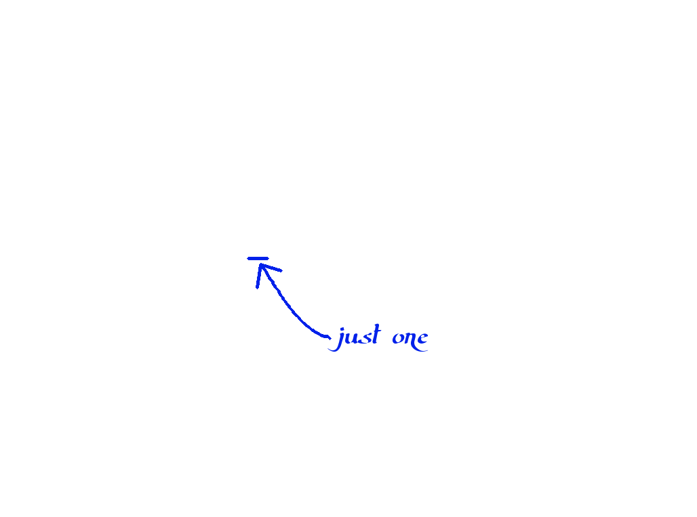
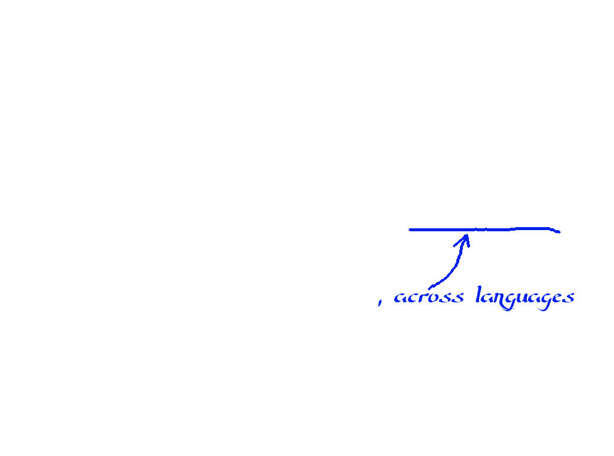


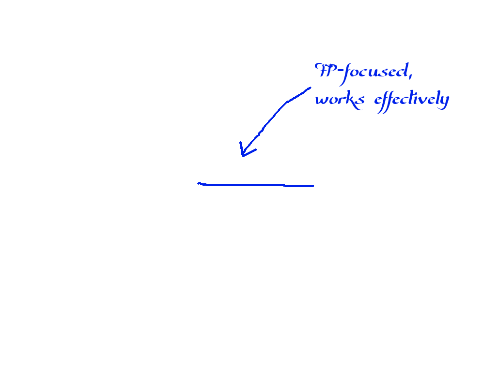
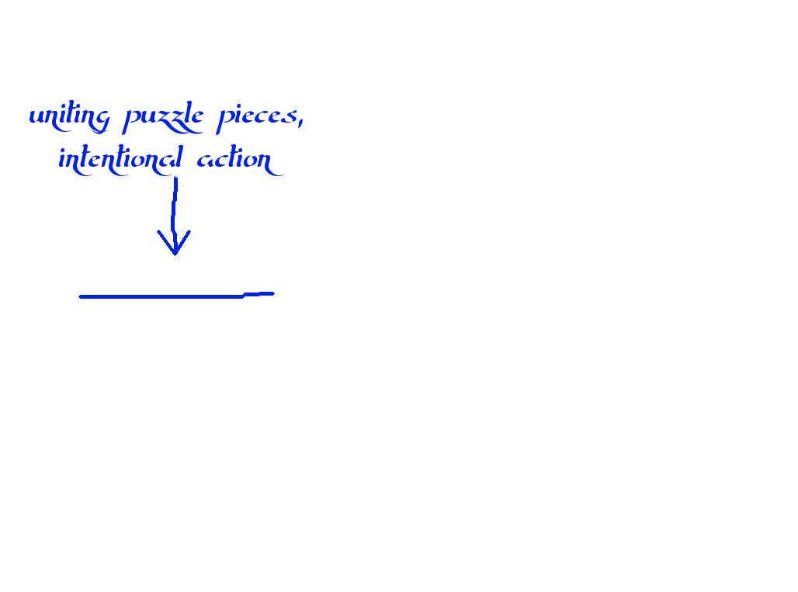
Key Idea
All of us are responsible for sharing the lambda love in an effective way to help compose a bigger, more diverse functional programming community
Outline
- Background
- Problem/Motivation
- Solution Structure: Inputs, Outputs, Method
- Testing
Background
Who I Am
- Australian
- Former journalist
- Haskell fan
- Active participant in many language communities
- OpenShift Developer Advocate at Red Hat
- Co-Founder of Lambda Ladies
- Co-Organiser of the Brisbane Functional Programming Group
- A woman
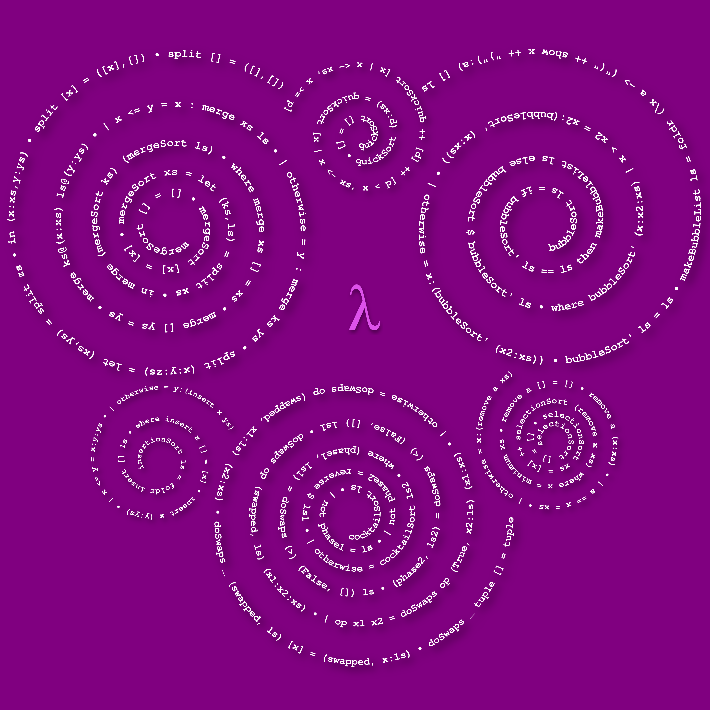
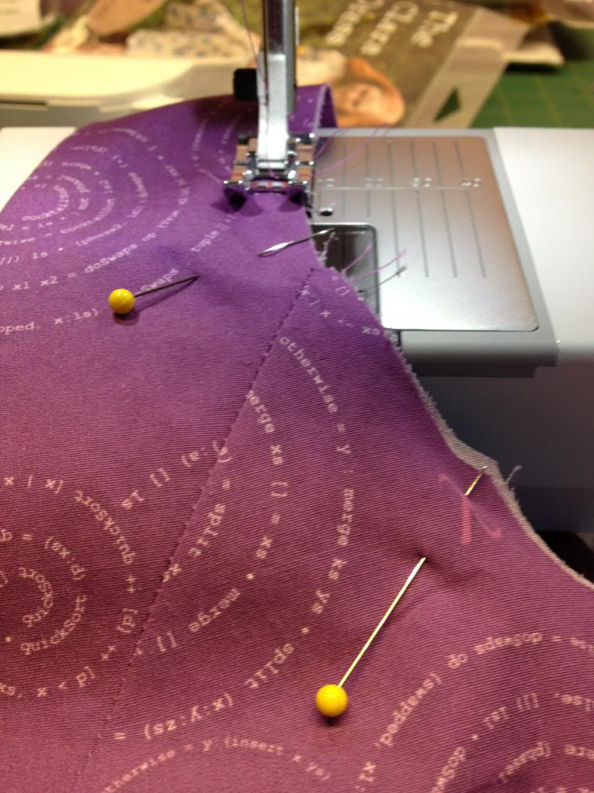
Who I Am
- Australian
- Former journalist
- Haskell fan
- Active participant in many language communities
- OpenShift Developer Advocate at Red Hat
- Co-Founder of Lambda Ladies
- Co-Organiser of the Brisbane Functional Programming Group
- A woman
What I Am Not
- Representing the opinions of all Lambda Ladies, female programmers, or women
- An expert on diversity/community building
Source: http://xkcd.com/385/
What I Am Not
- Representing the opinions of all Lambda Ladies, female programmers, or women
- An expert on diversity/community building
Let's Start a Conversation
Problem/Motivation
Problem #1: Community Size
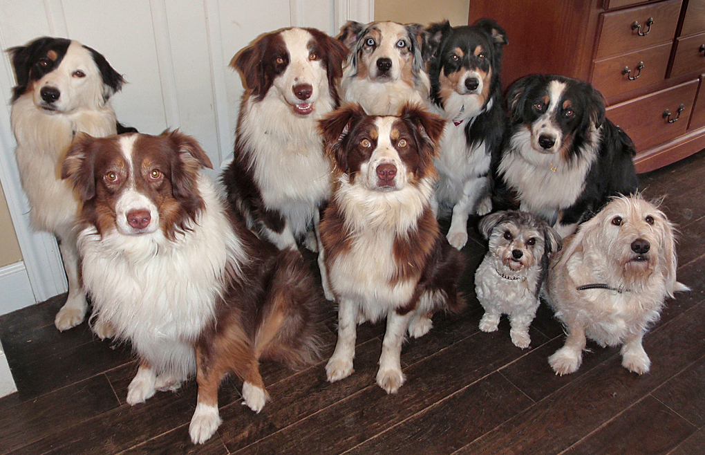Why Growth Matters
Problem #2: Community Diversity
Defining Diversity
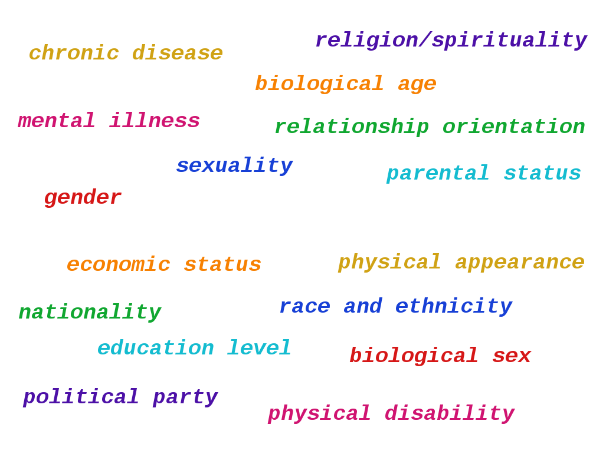
Unconscious Bias
Women in IT: Some Facts
- In 1985, 37 per cent of US computer science undergrad degrees were awarded to women, compared with 18 per cent in 2010
- In 1987, 42 per cent of US software developers were women; today, it's around 20 per cent
- A 2013 survey found women make up 11 per cent of the open source software community
- Global figures released last month showed 17 per cent of Google's technical employees are women
- More women are leaving the industry than men; 41 per cent of technical women are gone after 10 years and 56 per cent after 10 to 20, more than double the 'quit rate' for men
- There is no biological reason why women should perform worse than men at mathematical tasks
Women in FP
Women are definitely underrepresented in FP compared to programming in general, based on my personal observations at FP conferences in Europe and the US, as well as local communities across Europe
I attended one of the London [FP language] meetups a couple weeks back, and out of about 100 attendees I think I may have been the only woman present. I've never actually felt acutely out of place in an FP community until then.
[In] the Erlang community, in which I know there is a vast under-representation of women...
Why Diversity Matters
Innovative Thinking
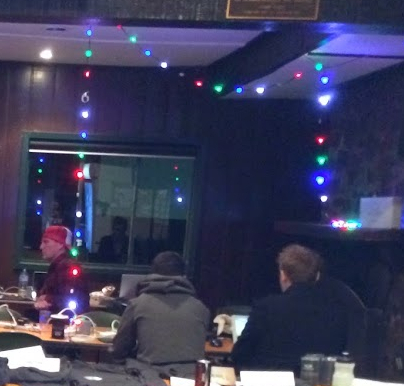 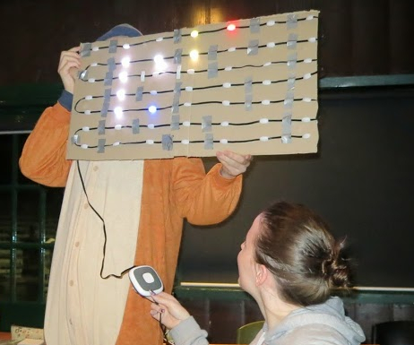Why We Might Have This Problem
#1: FP's Negative Image
The functional programming community is deeply academic
[I]n many FP communities there's a strong vein of elitism
[I]t can give a sense of protectiveness, clubhouse-style
It seems to create a culture of intellectual territoriality, and it's unfriendly to outsiders
[T]he functional programmer stereotypes are pretty unappealing to women - the whole neckbeard/beard thing. I think it's harder for people to identify with that sort of culture.
[S]ince FP tends to be sold in a hyper-intellectualized manner, this evokes the 'math is hard' brand of anti-intellectualism. ... [I]t has a differentially powerful impact on women due to the way we gender the sciences. That is, FP propaganda has a habit of taking the things which cause women to be underrepresented in STEM generally, and then cranking them up to eleven.
#2: Community Can Be Unwelcoming
They [FP meetup members] seemed to pride themselves on not even trying to make the titles of the talks accessible and kind of saw that as a barrier to entry that they wanted
[There were] no women there. That was bizarre and made me feel very uncomfortable. I'd go to conferences, and, literally, no one would talk to me unless I was very forward and grabbed people's attention.
There's simply always too much showing off and never enough treating people with respect
Countless monad jokes were told. To be honest, I felt pretty conflicted after that evening. On one hand, I really enjoyed the talks; on the other, I felt completely disassociated with the community itself.
#3: Lack of Support for Learners
They are not welcoming or encouraging to beginners. Despite what many of them say, they are the nerdiest of the nerds and on some level they want to keep it that way.
If my story is anything to go by, it takes a lot of privilege (and luck) just to get to the point where you discover FP. After that, then you add on all the issues about maintaining community involvement.
Most of the inroads seem to be academic and require a great deal of proactiveness (which takes confidence) and the privilege for someone to be willing to mentor you.
Structure of a Solution
Inputs
- Those who have never programmed
- Programmers not yet exposed to FP
- Members of the FP community(and those who may have left)
Inputs: We're All Responsible For Change
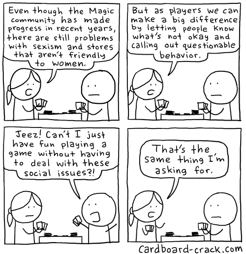Outputs
Outputs
- More functional programmers
- More people in FP from different backgrounds
- Happy FP community members
Method
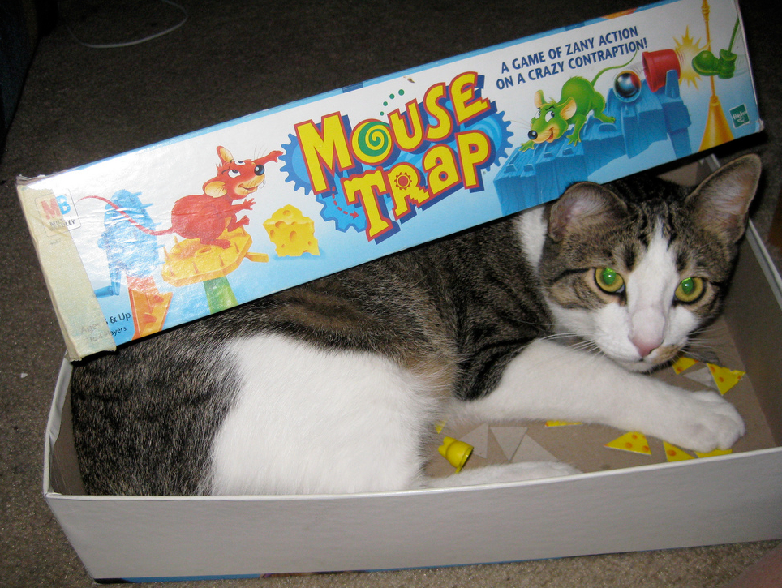My Story
#1: Education Providing Motivation
#1: Education - Inputs
- Beginners
- Underrepresented groups
- Other programming communities
I think a lot of people are scared of functional programming and that's definitely a barrier. I definitely think it was helpful that women were specifically invited. ... I feel like I have a decent grasp on monads now, and I'm wondering what all the fuss is about!
#1: Education - Inputs
- Beginners
- Underrepresented groups
- Other programming communities
#1: Education - Outputs
- Achieved learning goals
- Motivation to continue learning
#1: Education - Method
- Curricula/pedagogy
- Language choice
- Tools
- Focused events
- Onboarding
- Positive approach
Not starting with all your languages suck was pretty compelling
#2: Creating Safe Spaces
The Role of Lambda Ladies
It's a space where you don't always have to be on your guard against harassment. It's a space where you don't have to worry about how you present yourself, don't have to worry that femininity will undermine your credibility, don't have to worry about how asking 'stupid' questions will affect the way people think of women as a whole.
Just seeing other women is energizing, and keeps me interested in being out there as part of the general FP community
Understand that women create their own spaces to create tech because all the existing tech spaces are for men *by default*
It makes me feel less isolated
Women's groups, ultimately, are not insular; they exist to strengthen members' resolve so that women can both achieve individual success and bring progress to the programming community as a whole.
#2: Safe Spaces - Inputs/Output
- Input: Those who may not otherwise participate
- Input: Everyone in the community to make it a safer space as a whole
- Output: Secure community members who can focus on FP itself
They [men] seem to feel powerless to do anything about the state of affairs, and yet, they have power: they can let men who make these comments know that sexism isn't okay. ... Countering sexism requires courage and moral stamina. It is work that largely needs to be done by men...
#2: Safe Spaces - Inputs/Output
- Input: Those who may not otherwise participate
- Input: Everyone in the community to make it a safer space as a whole
- Output: Secure community members who can focus on FP itself
#2: Safe Spaces - Method
- Codes of conduct
- Inclusive language
- Haskell Symposium Chair Report 2013: speak up, listen, support one another, take care of ourselves
#3: Mentoring
#3: Mentoring
- Input: Anyone one step ahead
- Output: Mentees become mentors
- Method: Friendly, encouraging, and willing to truly listen
More Method Ideas
Setting up communities which aren't so hyper-intellectualized is a big step. Getting rid of all that propaganda and just treating FP like any other paradigm...it's probably the easiest thing we can tackle.
Get more women featured on YouTube series such as Numberphile, Computerphile, haskellcast, and Microsoft's Channel 9
Outreach, training, scholarships for conferences
Educate everyone...about the ways that tech culture enforces power dynamics that disadvantage people who are female, trans, not white, poor, disabled, queer, etc.
[R]each out to organizations that focus on improving the experiences of women, people of color, and those who are LGBTQAI. ...[S]eek advice regarding codes of conduct, marketing, and other aspects.
Testing
Testing Ideas
- FP community survey
- Assessment of teaching tools and their effectiveness with beginners
- Inviting comment from outside the community
Conclusion
References, Resources, and Credits
References
- A Survey of Literature on the Teaching of Introductory Programming, Arnold Pears et al., 2007
- An Empirical Investigation into Programming Language Syntax, Andreas Stefik and Susanna Siebert, 2013
- A Theory of the Relationships between Cognitive Requirements of Computer Programming Languages and Programmers' Cognitive Characteristics, Garry L. White, 2002
- Debunking Myths About Gender and Mathematics Performance, Kane and Mertz, 2012
- Fostering Innovation Through a Diverse Workforce, Forbes Insights
- Fun, functional, and teachable?, Interview with Dave Thomas
- Getting To Work on Diversity at Google. 2014
- Haskell Symposium Program Chair Report, 2013
- How Diversity Can Drive Innovation, Sylvia Ann Hewlett et al., 2013
- How To Exclude Women Without Really Trying, Tim Chevalier, 2012
- Increasing Diversity At Your Conference, Ashe Dryden, 2013
- Science Faculty's Subtle Gender Biases Favor Male Students, Moss-Racusin et al., 2012
- StackOverflow Jobs
- The TeachScheme! Project: Computing and Programming for Every Student, Matthias Felleisen et al., 2003
- Women and IT: By The Numbers, NCWIT, 2012
- Women in IT: The Facts, NCWIT, 2009
- Women in Tech: Scarcity, Sexism and Solutions, Jen Heilemann, 2013
Reading and Resources
Image Credits
- Book Puppy [cropped] (Clare Snow, CC BY-NC-SA 2.0)
- Cardboard Crack: Sexism
- Cat and Mouse [cropped] (cloud_nine, CC BY-NC-SA 2.0)
- Cat Hiding [cropped] (Jean-François Chénier, CC BY-NC 2.0)
- Cats and Dogs [cropped] (raneko, CC BY 2.0)
- Dog Pack [cropped] (carterse, CC BY-SA 2.0)
- Laptop Dog [cropped] (Anat Reisner/Zvi Cons, CC BY-NC-SA 2.0)
- Mouse Trap Cat [cropped] (Glenda Sims, CC BY-NC-SA 2.0)
- Mentor Dog [cropped] (tailsandfur, CC BY-NC 2.0)
- Open Clip Art Library
- Orangutan Testing [cropped] (Shankar S., CC BY 2.0)
- Soccer Kitten [cropped] (Found Animals Foundation, CC BY-SA 2.0)
- XKCD: How It Works
- Zazzle.com.au: Monad T-Shirt
Composing a Functional Community
http://community.codemiller.com
Katie Miller (@codemiller) OpenShift Developer Advocate at Red Hat